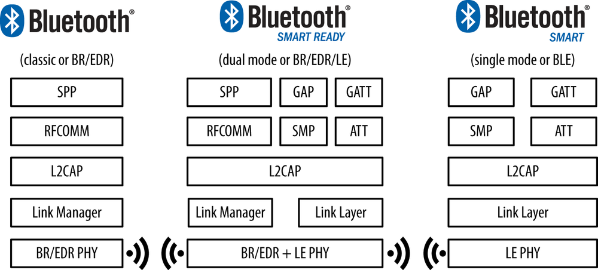
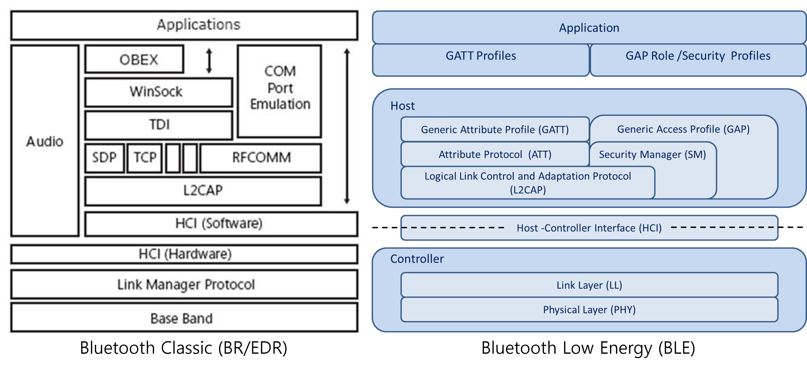
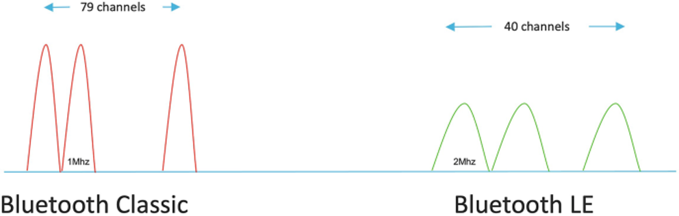
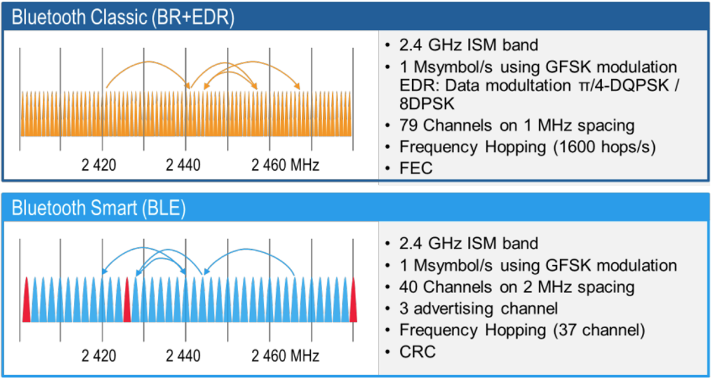
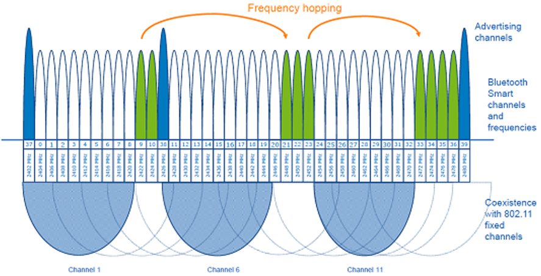
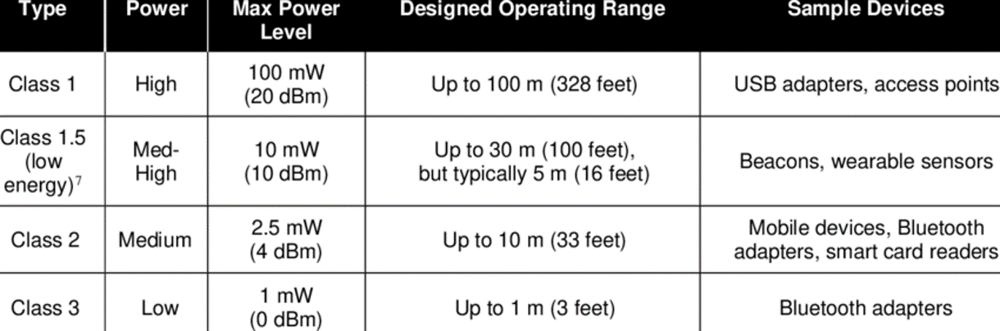
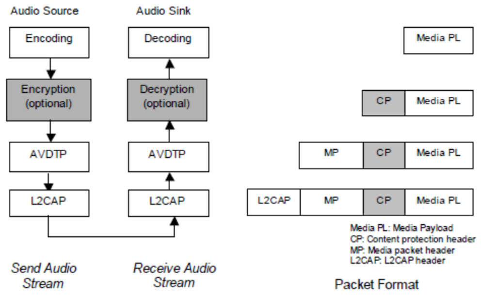
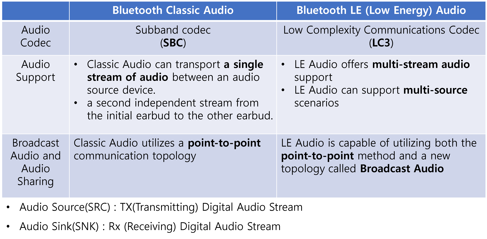

Bluetooth : csr, nordic 등을 다룬 경험으로 관련 기술 자료 정리
Bluetooth는 4버전을 기준으로 크게 변화하게 된다.
그래서 3버전 이하를 Classic이라고 부르고,
그 이후 버전을 BLE (Bluetooth Low Energy)라고 부른다.
현재는 Bluetooth 5.4버전이 2023년 2월 7일에 발표된 최신 버전이다.
그럼 최신 버전을 쓰면되지 왜 Classic을 알아야 하는가?
Audio 때문이다. 아직도 Audio는 Classic 방식으로 사용하고 있다.
Classic에서 Bluetooth 2.1 + EDR 버전이 Audio 호환성이 가장 좋았다.
내가 처음 접한 Bluetooth 버전이기도 하다.
5.2버전에서 LE Audio라는 것이 발표되었지만, 아직까지 활성화되지 못하고 있다.
4버전이 나올 때, Bluetooth는 프로토콜 스택에 따라 3가지 종류가 있었다.

세부 프로토콜 스택을 살펴보면 아래 그림과 같다.

물리적 레이어에서부터 살펴보자.
먼저 주파수를 비교해보면 아래와 같다.



출력을 기준으로 Class를 나누는 기준은 아래와 같다.

Bluetooth Audio에 대해서 살펴보자.

Classic Audio와 LE Audio에 대한 비교는 아래와 같다.

이제 본격적으로 BLE를 알아보자.